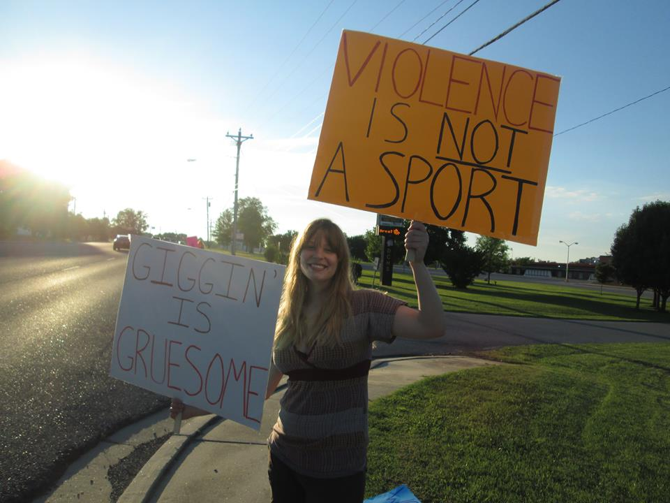
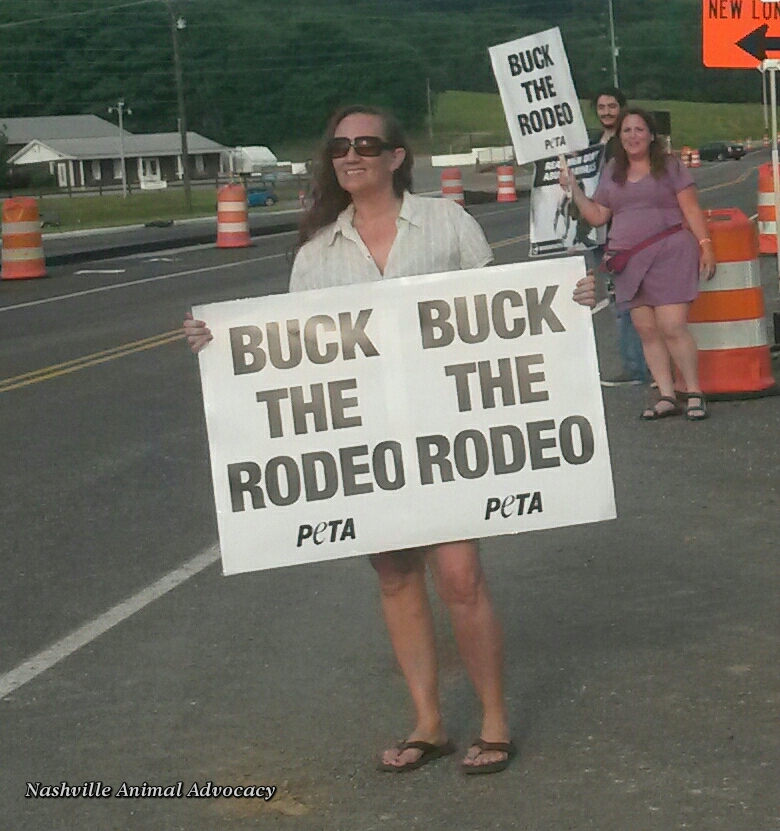
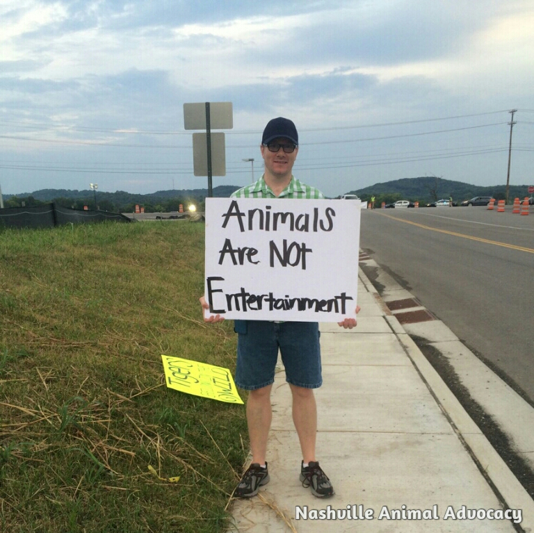
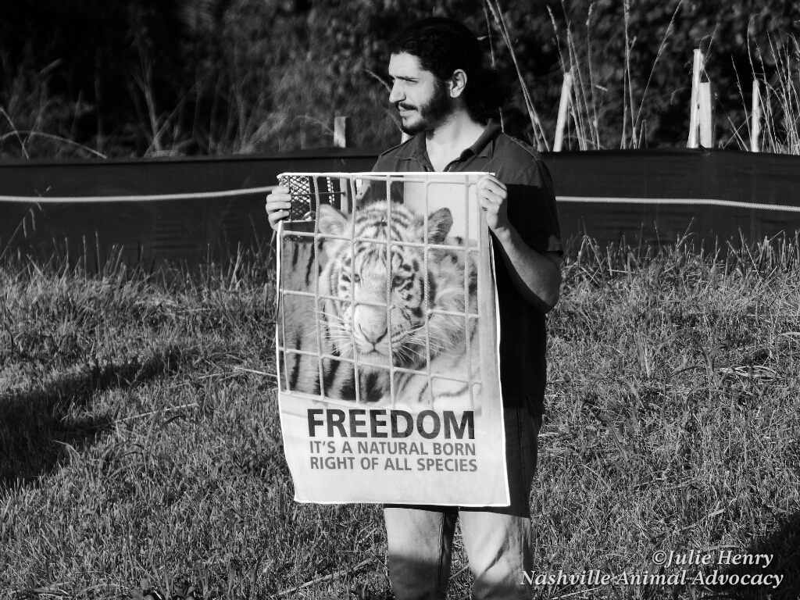
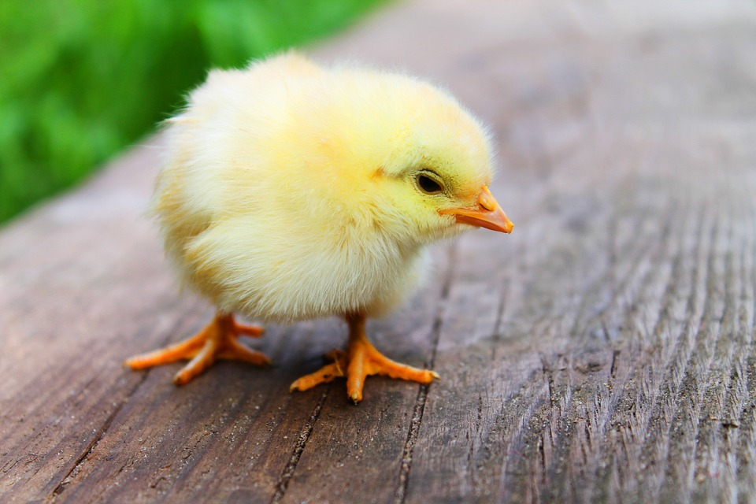
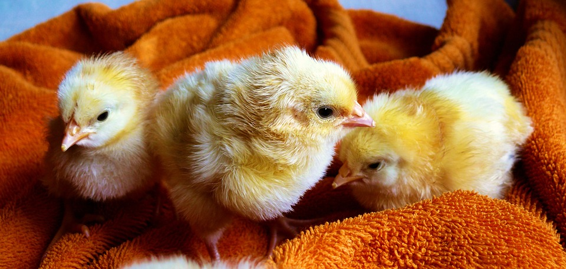
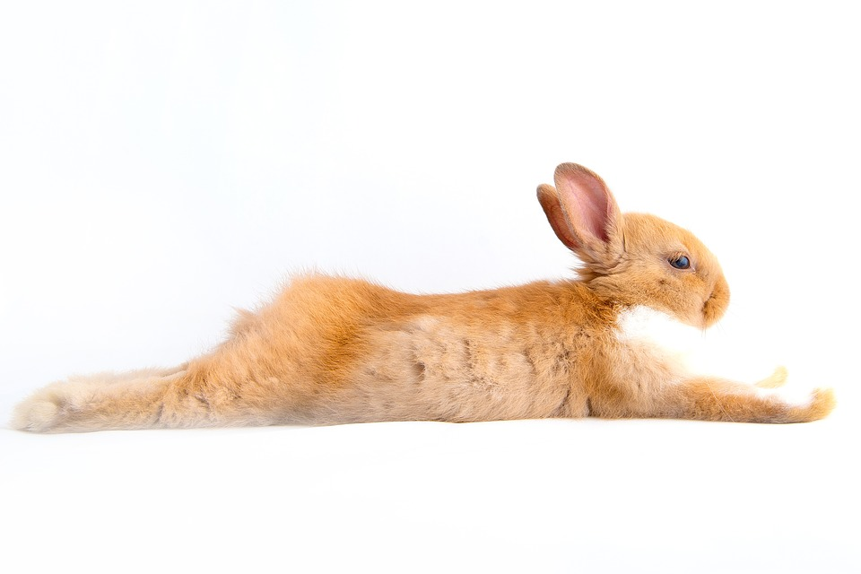

Nashville Animal Advocacy
Nashville Animal Advocacy is dedicated to spreading animal rights in Tennessee through veganism, education, research, special events, protests and legislation.
About Us
Meet the team!
Tricia Lebkuecher - Executive Co-Director
Tricia has been involved with Nashville Animal Advocacy since its inception in October 2012, and has been organizing since June 2013. She has always wanted to be an activist full-time. She lives with one human and two cat companions, and could not be happier with her life!
tricia@nashvilleanimaladvocacy.org
Amy Pruett - Executive Co-Director

Amy is passionate about all animals and working towards animal liberation. She is a former veterinary technician, has two daughters and is the guardian to two rescued pit bulls.
amy@nashvilleanimaladvocacy.org
Megan Norris - Secretary
Megan has a BA degree in psychology and Spanish and a Masters degree in Social Work from University of Tennessee Knoxville. She feels that animals need to be advocated for as well as people on a legal level. She has a long history of advocating for human and animal rights internationally such as protesting Bull Fighting in Barcelona, Spain in 2011 alongside many other animal activists and participating in "paro"/ protests for free education in Valparaiso, Chile.
megan@nashvilleanimaladvocacy.org
Rick Woosley - Treasurer

Rick has been vegan since 2008 and has been involved in various animal advocacy causes since that time. He shares his life with wonderful animal companions and looks forward to helping make positive changes for animals here in the Middle Tennessee area.
rick@nashvilleanimaladvocacy.org
Julie Henry - Field Researcher and Photographer

Julie is a biologist/adventure traveler, photographer, and most importantly, activist. In the last 6 years she's worked as a wildlife investigator in South East Asia studying the impacts of the black market wildlife trade, an community organizer for GreenPeace's Operation Tiger, Forest Crimes Unit, and Clean Our Cloud campaigns, organizer for Tar Sands Blockade fighting against the construction of the Keystone XL pipeline, and lived in the backcountry of Montana and Wisconsin with a group called Wolf Patrol fighting against wolf hunting. In her downtime, she can be found hitting the rocks with her climber friends, or exploring a cave deep underground. She's also obsessed with her cats, but she refuses to say how many she has.
julie@nashvilleanimaladvocacy.org
Nelson Schoenbrot - Technical Officer

Nelson has been involved with Nashville Animal Advocacy since April 2015. Not too long ago he made the move from New York to Nashville. He is a long time vegetarian and recent vegan convert.
nelson@nashvilleanimaladvocacy.org
And all of us here at NAA would like to give an enormous thanks to Kathy Carmon Tobey, an incredibly talented graphic designer who made our awesome logo!
History
Nashville Animal Advocacy was founded as a Meetup.com group in October 2012 by Laura Levy. Laura, a vegan and an avid animal rescuer, wanted a group to connect those who wanted to help animals with groups that needed help. Laura stepped down a year after NAA began and moved away from Nashville, but she hopes to come back, and we hope she does too! Laura passed her responsibilities to Tricia Lebkuecher, who had been co-organizing since July 2013 and a member since the first meeting. Tricia made the Facebook page in October 2013, and met her soon-to-be co-organizer, Amy Pruett in January of 2014 at a Ringling Bros. Circus protest. Amy and Tricia have run the group together ever since, and are looking ahead to incorporation as an official non-profit in the following months. Everyone in the group management is vegan and most are loving care-givers of adopted rescue animals. Our collective hope is that someday the world will be a safe and happy place for everyone, humans and animals alike.Upcoming Events
Protest The Iroquois Steeplechase
Saturday, May 14 at 11:00 AM
The appropiatively-named Iroquois Steeplechase (which has nothing to do with the actual Iroquois Peoples) is a horrific horse racing event in our community where horses race while jumping over obstacles (as opposed to flat racing).
On average, 24 horses die per week in the horse racing industry—over 1,200 a year. Only 5-10% of horses bred for racing ever see a track, and the "rejects" are sent often to slaughter along with "retired" racehorses. In many cases, if a horse fails to bring their "owners" a profit after 3 major races, they also will be sent to slaughter. Very few racehorses are ever retired to pastures.
Please join Nashville Animal Advocacy Saturday, May 14th at 11 am to protest the horric Iroquois Steeplechase in their 75th year of promoting animal cruelty. All materials will be provided.
RSVP on Facebook
Protest The Franklin Rodeo
Thursday, May 19 at 6:00 PM
Friday, May 20 at 6:00 PM
Saturday, May 21 at 6:00 PM
Rodeos are cruel and dangerous events for the animals involved. The Franklin Rodeo claims the rodeo to be a family fun event, where children are allowed to participate in chasing terrified baby animals and cowboys perform harmful and violent acts against animals.
Please join us to be a voice for those tortured, abused and even killed by the rodeo. We will protest all 3 nights of the rodeo from 6-7 pm.
We will be arranging carpools from Nashville to Franklin for this event. If you would like a ride, please post below and we will give you arrangements.
RSVP on Facebook
Past Events
Nashville Zoo Protest
Saturday, April 30 at 12:00 PM
Wild animals belong in the wild, not in zoos. Not only are these animals often either stolen from their parents or forcibly bred, the captivity of these wild animals can lead to severe psychological problems.
We recently applauded the Nashville Zoo for retiring their elephants to The Elephant Sanctuary in Hohenwald, TN. However, our elation was short-lived when we found out they retired those elephants as part of a plan to acquire more animals. The elephants may likely be taken from the wild.
Let's show the zoo that Nashvillians do not approve of animal captivity! Please join Nashville Animal Advocacy in protesting outside the entrance to the Nashville Zoo on Saturday, April 30 at 12 pm. All materials will be provided.
Please also sign our petition to keep the Nashville Zoo from acquiring new elephants.
Protest Tractor Supply Co's Sale Of Easter Chicks
Saturday, March 26 at 12:00 PM
Tractor Supply Co. is selling baby chicks for Easter this year. TSC's sign in their store claims they are not "Easter gifts," but yet the store only carries them February-April, making it seem like that is very much what they are for.
Animals are NOT toys. They should not be gifts for children. Many animals gifted to children for holidays are quickly forgotten, and as a result many are either neglected or abandoned. Additionally, purchasing animals instead of adopting them leads to an increased demand for them to be bred and commodified.
Please join us to help let TSC customers know that animals do not make good gifts! We will be meeting in front of the Tractor Supply Co in Hendersonville on Saturday, March 26 at noon. All materials will be provided, but feel free to make your own signs if you feel so inclined.
Saturday, February 13 at 12:00 PM
Nashville Animal Advocacy is protesting fur retailers in Green Hills!
The fur industry is incredibly cruel. Modern fur most often comes from factory fur farms, where animals live in small cages and are tortured for their skins.
Nashville Animal Advocacy will be meeting in front of Regency Furs at 4113 Hillsboro Pike, Nashville, TN. All materials will be provided.
After spending about an hour at Regency Furs, our group will walk up the road a few blocks to the Green Hills Mall to protest at that location as well. If you're coming late, please look for us there!
Nashville Rally for Cecil
Saturday, February 6 at 12:00 PM
Join the Nashville Rally For Cecil and speak out against evil trophy hunting!
To obtain more information about the Worldwide Rally For Cecil, please visit www.cwint.org/rallyforcecil.
Nashville Zoo Protest
Saturday, January 30 at 12:00 PM - 3:00 PM
Wild animals belong in the wild, not in zoos. Not only are these animals often either stolen from their parents or forcibly bred, the captivity of these wild animals can lead to severe psychological problems.
We recently applauded the Nashville Zoo for retiring their elephants to The Elephant Sanctuary in Hohenwald, TN. However, our elation was short-lived when we found out they retired those elephants as part of a plan to acquire more animals. The elephants may likely be taken from the wild.
Please join Nashville Animal Advocacy in protesting outside the entrance to the Nashville Zoo on January 30 at 12:00 pm. All materials will be provided.
Saturday, November 14, 8:30 am to 6:30 pm
The Pig Preserve, located in Jamestown, TN , is a pig sanctuary dedicated to caring for pigs from all walks of life. It is exceptional among pig sanctuaries because they try to offer as much freedom and autonomy for their pigs as possible, giving them more space per pig than many other sanctuaries.
We will be carpooling from Nashville at 8:30 am, and arriving at the Pig Preserve around 10:30 or 11. We will meet at 1700 State St., Nashville, TN, or we can pick people up if necessary. If you are worried about your car being left on the street, parking is available in a locked garage at the address listed. If you would rather meet us at the Pig Preserve, it's located at 199 Ike Blevins Jr. Road, Jamestown, TN 38556.
Please be aware that this event may be cancelled or moved due to weather conditions, so please be on the lookout!
Check out the Pig Preserve's website! thepigpreserve.org
Fur Free Friday (Protest at Regency Furs)
Friday, November 27, 12 pm
Fur Free Friday is an international day of protest and disruption against the cruel fur industry. Join Nashville Animal Advocacy as we partner with several national orgs including Last Chance for Animals, In Defense of Animals, and PETA to hold our event here in Nashville!
Nashville Animal Advocacy will be meeting in front of Regency Furs at 4113 Hillsboro Pike, Nashville, TN. All materials will be provided.
Please be aware that traffic will be incredibly heavy in the Green Hills area on the day of this protest (Black Friday), so please plan to leave early to be able to get there!
Leafleting with Vegan Outreach in Middle Tennessee
From 8:00 am to 3:00 pm
10/27 Middle Tennessee State University (Murfreesboro, TN)
10/28 Tennessee State University (Nashville, TN)
10/30 Vanderbilt University (Nashville, TN)
11/2 Austin Peay State University (Clarksville, TN)
Protest Whole Foods
Saturday, October 24 10:30 am to 1 pm
Tell Whole Foods customers that there is no such thing as "humane" meat!
Following a damning PETA investigation of a Whole Foods "happy meat" pork supplier, protests have errupted accross the country. The customers of Whole Foods have a right to know that meat from Whole Foods is not cruelty free, as Whole Foods would lead you to believe.
Pigs at a "Step 2" pork supplier (rated more highly than most of Whole Foods' pork suppliers) were "confined to crowded sheds with concrete floors," "went without adequate veterinary care for days or even weeks," and "workers hit pigs who were being loaded for slaughter." (Source: PETA)
Just to be clear, we are not calling for a boycott of Whole Foods. Instead, we are encouraging customers to buy the ONLY type of "humane meat" available: Vegan meat alternatives.
Please join us on Saturday, October 24 at 10:30 AM to inform the public of Whole Foods' gross misrepresentation of their "humane" standards.
Like Us on Facebook
Zoos Are No Fun For Animals
By Ashley Roth, Communications Specialist
April 18, 2016
Activists cheered when the plight of captive animals was brought into mainstream discourse. 2013's BlackFish veered these thoughts and questions into the public eye. The documentary shocked audiences, showing them how their beloved Shamu truly lived. After its release SeaWorld's stock dropped 30%. SeaWorld refuted the film's claims in their desperate television ads; they promised bigger fish bowls. The public wasn't buying it. The film's message speaks beyond SeaWorld and orcas: Animals in captivity experience devastating psychosis. After the film, society began looking at zoos through a new, scrutinizing lens. NPR has aired several segments debating the cruelty of zoos; TIME magazine had an entire issue devoted to animal intelligence; and Huffington Post and the Guardian have numerous articles discussing the subject.
Being that this is a group based on animal advocacy, our stance on the subject is probably quite clear. BlackFish portrayed an orca's insanity in captivity. Zoos hold their own instances. There was Gus the polar bear. Slate.com documents his repetitive figure-eight swimming, often for over twelve hours straight. Little Joe, a teenage gorilla, escaped from the Franklin Park Zoo in 2003. His frantic run for freedom resulted in injuries before he was shot with a tranquilizer gun. Other escaped prisoners were not merely tranquilized. PETA has a memorable video titled, "9 Animals Driven Insane." The clip shows animals suffering from zoochosis. Pacing, circling, swaying, and self-injury are portrayed through actual footage of animals in captivity. Bill Travers conceived this term--zoochosis--to explain the compulsive, recurring behaviors of captive animals. If you've been to a zoo, you've seen these behaviors. You've seen a lion pacing, an elephant swaying, or a bear walking in repeated circles.
Zoos beget these behaviors by forcing nature into unnatural conditions. Their enclosures are too small. In the wild, elephants walk thirty miles a day. No fancy zoo enclosure is conducive to this. Their environments can't duplicate nature. Animals are shoved into smaller spaces when the weather is acrimonious to their biological needs. Other animals--such as polar bears in California--are given artificial climates. Some patrons cause further stress by taunting animals. The lifespan in captivity is disparate from a life in the wild. Wild elephants can live up to seventy years; most captive elephants are dead by forty.
Animals are unhappy in captivity. Captive chimpanzees are ripped from their mothers at an early age; in the wild baby chimps are inseparable from their mothers until about seven years of age. Penguins at Scarborough Sea Life Centre are on antidepressants. Zoos enforce the notion that animals are mere commodities. Remember Marius the giraffe? He was killed because that zoo felt they had too many giraffes. Even his dismembered body was on display, as he was fed to lions in front of small children. Some zoos sell their "surplus" animals to random buyers, traveling circuses, or medical labs. These are business built on atrocities that are not benefitting animals.
Zoos will tell you they are necessary--the key to conservation and education. Efforts for "conservation" would serve the wild better. Zoos "conservation" operates under the concept that if a species goes extinct, the zoo animals can be released back into the wild. This has been proven unsuccessful--the zoo population is limited, often inbred; and these captive animals are not immune to wild diseases and conditions. Why not ensure the wild population is secure, rather than relying on human-controlled "wildlife?" Besides, more often than not, zoos money is spent on technology and showier exhibits--not on conservation. Their concern is how secure their finances are. What about education? Learning from the enslaved is wrong, first off, and few are being educated. Rarely do people read the little plaques containing pithy information. Crowds surrounding the enclosures are often dense, and obstructing of views. And any view is of an animal suffering from artificial conditions, probably from zoochosis. This "learning" experience is problematic. It's false. Better education would be obtained through books and videos and catching animals in their natural habitat. The bottom line is even IF zoos were supporting conservation and children were learning something, it is wrong. Zoos are for human consumerism, not for animals' benefit. These animals would probably rather be extinct than suffering.
Now, here's where it gets personal. Many readers are probably Nashvillians (this is a Nashville based animal advocacy group, after all!). Maybe some of you are thinking: "Sure, these other places are awful--but not our beloved Nashville Zoo!" Even with the illusion of pretty enclosures and clean parks--yes, even the Nashville Zoo. Recently, our city heralded the Nashville Zoo's decision to send their elephants to the Elephant Sanctuary in Hohenwald. This decision made the zoo appear progressive, like they were suddenly enlightened and realized zoos were becoming dated. That isn't the case. These elephants were removed because they'd exceeded their use--they were old and the zoo was planning several renovations. This elephant herd was separated before the donation--Juno sent to Florida, where she died from an "undetected intestinal disease." The other three were ferried to the sanctuary, so the Nashville Zoo could resume their vision for a larger elephant exhibit. In fact, they plan to expand their entire facility--culminating by 2020. Expansion means more animals behind bars. Animals either bred for this heinous existence, or ripped from the wild. Concerning the elephants, that plan is said to be on hold--but, in their own words, "our vision is to eventually have a growing elephant herd."
Other animals are part of this plan. Young tigers are forthcoming--the old ones being sent to Tiger Haven, another marketing ploy to appear compassionate--and they are thrilled to be imprisoning white rhinos in the vacated elephant exhibit, stating they will be "a valuable start to our rhino collection." Our local zoo is not paralleling society's growing awareness. They still refer to this living beings as a "collection."
Nashvillians, please stop supporting this business. Sign our petition to stop the Nashville Zoo from acquiring more elephants. Nashville parents, take your kids to see our own beautiful indigenous wildlife. I've taken my daughter to our stunning parks and we've seen herons, a variety of ducks, and deer. Seeing them makes her excited--and they're free to live their lives without human control. If you or your children want to see other animals, travel. There are other options. Compassionate ones.
Please consider joining our protest of the Nashville Zoo on Saturday, April 30th at noon. All materials will be provided.


We Are Not Gifts!
By Ashley Roth, Communications Specialist
March 22, 2016
Easter is soaked in springtime symbolism. It's a holiday inundated with remnants of the Pagan holiday Ostara. Kids run through backyards and parks, searching for plastic eggs (because chicken eggs aren't for humans, remember?). They gobble up jelly beans and chocolate hollow bunnies. They wear pastels. Little hands dig through baskets, and reach in for their new favorite toy: a plush bunny, duck, or fuzzy chick. The most crucial aspect of this scene is that their new furry friend is a toy--as in made from cloth and stuffing and no vital organs inside. Because live animals are not commodities--and should never be a gift from the Easter Bunny.
Sadly, some Easter Bunnies are uneducated and do this very thing. It's unfortunate that many find the need to buy chocolate laden with cow's milk, or that they support the egg industry for some glorified art project. News flash: there are vegan options, even for dyeing eggs. Parents can craft their own egg substitutes, or buy EggNots. As for the live animals--this shouldn't have to be explained. But it does.
Every year too many kids wake up and find a living, breathing creature nestled in plastic grass. On that day, this creature is cute. The little chirps are a welcome background to an egg hunt. Baby bunnies make for adorable social media posts. Everyone can collectively "ooh" and "ah". Then there's the day after Easter. And the day after that. Baby animals grow up. They have daily care requirements. They may have special diets, or feeding demands. Often these gifted animals need particular enclosures for their safety, and maybe have specific temperature needs. Rarely, do excited parents plan for the future reality--all because they began thinking of this animal as a purchased object, rather than a someone.
Parents, do you get a dog on a whim? Or a cat? Usually, you discuss it as a family and plan on walks and litter duty. These same rules should apply here. Small animals often have more intricate care needs than the domesticated animals most are used to--and they aren't babies forever. When you don't think or talk about real life, or educate yourself on these Easter- themed animals--their lives are in peril. Let me tell you what happens. They are discarded, like any other worn plaything. Shelters are the best outcome for these tossed animals. 80 percent of all rabbits at shelters were once cuddly Easter gifts, and now they're on death row hoping that a true bunny lover happens to rescue them. And the chickens and ducks--well, how many people are searching shelters for them? What if parents return these animals to the feed store, or the pet store? Chickens and ducks will be thrust into the farming assembly line, either to produce more commodities or to be turned into food. Rabbits will be shoved back into a tiny glass enclosure. There, they wait for chance. These aren't made of plastic or cloth; they are living, breathing animals who feel and should never be treated like trash.
Rabbits are fragile and may be harmed by children who don't mean to be rough. They enjoy chewing and need to be protected from wires, and your chewable valuables need to be protected from them. Their dietary needs are specific--including grass hay and two cups of vegetables. Rabbits have incredibly sensitive digestive systems. Any sudden food changes, and a toxic--and potentially fatal--bacteria may flourish in a rabbit's intestines. That isn't the only ailment rabbits are prone to. They can be infested with mites; their teeth may become overgrown; and they are very susceptible to heatstroke. Rabbits can be excellent companions, but their care is complicated--much more complicated than any toy given in a woven basket.
Then, there are chickens. Once the softest of chicks, they quickly grow into hens or roosters with their own list of demands. As tiny chicks, they are delicate and can die from being handled incorrectly. Chickens have dietary needs specific to their age and gender--their human caregivers need to know the differences in calcium and protein. They also need to know that avocados can make chickens very sick. For housing, chickens need a clean and safe coop with room for exercise and dust to bathe in. Chickens need to be thoroughly examined every day. They are vulnerable to a slew of viruses and parasites. Oh, yeah--chickens sometimes become infected with salmonella. A disease that can make them and your human children come down with a messy, uncomfortable illness. Think about that before you place a little chick next to the chocolate bunny. You know they make really cute motorized toys that look just like chicks--salmonella free!
Oh, and ducks. Sure, the kids loved their duckling and swore to love him forever--but, then it's May and they're bored with him. And parents? They're sick of cleaning up after him and making sure his basic needs are met. Thankfully, he's wild! And can go back to a serene pond with all his duck friends. Wrong. While 98 percent of gifted ducks are dumped by a pond or creek, or at a park--it doesn't make it right. This duck you gave to your kid is domesticated, and thrusting him into the wild is going to kill him. He won't know how to fend off predators and other ducks may reject him. He won't know innate behaviors of wild ducks, because he isn't wild. So, before you kill this "Easter gift," educate yourself and your kids on duck care. See if everyone is willing to actively engage, clean, and be diligent about a duck-friendly diet (no bread!). If not, ducks aren't for you. And they're NEVER for an Easter basket.
Maybe someone reading this is up to the challenge of rescuing these animals and is more than devoted to their care. That's great--it still doesn't justify them as Easter gifts. By purchasing these animals, you are telling your children and yourself they are just a commodity. If a child truly expresses interest in rescuing an animal, have long conversations about care and responsibility--let them talk to others who have these animals as companions. And, then, actually rescue them. Don't support pet stores or feed stores that are celebrating the exploitation of animals--who don't care if you dump them when you're through with them. Because they already made their profit.
Nashville, here's where you come in. Obviously, after reading this you have no intention of gifting live animals to your children. You should share your awareness. Did you know we have local feed stores selling baby chicks? Davidson Co-Op is selling them for a mere three dollars. Parents won't bat an eye paying that--and probably won't think much of dumping them after either. Please go to these stores and educate sellers, educate potential buyers. Tell your friends. Share on Facebook. Tell them about Nashville's Bunny Rescue and Clover Patch if they are really serious about becoming rabbit-parents. Bunnies can be rescued all year long--just not on Easter. That day should be reserved for veganizing Cadbury Eggs and reading Peter Rabbit.




Nashvegans!
A vegan social club
Chew the right thing!
Share delicious meals, swap recipes and enjoy compassionate conversations with other vegans living near you.
We also welcome omnivores who'd like to learn more about becoming vegan.
Switching to a plant-based diet is the single most important move you can make for your health, for the environment, and for the animals - 57 Billion per year.
Viva Nashvegans!
Upcoming Events
Woodlands Indian Restaurant
Wednesday, May 4, 6:30 PM to 8 PM
Vegetarian Indian food. Please note the food is spicey! You may request mild, medium, or hot but even the mild is robust and tasty. They also serve vegan dishes. Be sure to ask.
If you're a first timer the location may be difficult to see from West End Ave. It's on the ground floor of the Continental Condos but it's definitely not hard to find. Right off I-440, minutes from Vanderbilt or downtown.
Parking is limited. For additional parking: from the front parking lot, drive to the rear of the building, turn right at the alley, go past the small day care center on the right, exit out onto the street, park, and walk back to the restaurant. Don't park behind the building, it's reserved for residents of the Continental.
woodlandstennessee.com
Past Events
Nashville Vegfest
Saturday, April 9, 10 AM to 4 PM
VegFest is coming to Nashville!
The event will be held at the Commodore Ballroom at Vanderbilt University located at 310 25th Ave. S., Nashville, TN.
There will be vendors selling food, free samples, and a variety of vegan speakers talking about food, health, and animal rights. Nashvegans will be there at the Nashville Animal Advocacy booth, so please come visit us! Our very own local writer Ashley Roth will be a featured speaker (and has the table right next to ours). The first 300 people to arrive get gift baskets, so be sure to be there early!
For more information on VegFest, please see their website: nashvillevegfest.com
The event is free, but please be sure to sign up for a ticket so they can get a better estimate of people attending: Nashville VegFest Tickets There will also be free parking available.
Woodlands Indian Restaurant
Wednesday, February 3, 6:30 PM to 8 PM
Vegetarian Indian food. Please note the food is spicey! You may request mild, medium, or hot but even the mild is robust and tasty. They also serve vegan dishes. Be sure to ask.
If you're a first timer the location may be difficult to see from West End Ave. It's on the ground floor of the Continental Condos but it's definitely not hard to find. Right off I-440, minutes from Vanderbilt or downtown.
Parking is limited. For additional parking: from the front parking lot, drive to the rear of the building, turn right at the alley, go past the small day care center on the right, exit out onto the street, park, and walk back to the restaurant. Don't park behind the building, it's reserved for residents of the Continental.
woodlandstennessee.com
Vegan Book Club
Monday, February 1, 6:30 PM
This meet-up has been scheduled for the first week of February to give people time to find the book at their local library or order The Companion Species Manifesto Dogs, People and Significant Otherness by Donna Haraway It's a small easy-to-read book that will get us thinking about compassion in 2016. We will also vote on which books and in what order we'd like to cover them over the next year so that everyone can have time to plan while enjoying vegan lattes and mochas.
Woodlands Indian Restaurant Monthly Meetup
Wednesday, December 2, 6:30 PM
Vegetarian Indian food. Please note the food is spicey! You may request mild, medium, or hot but even the mild is robust and tasty. They also serve vegan dishes. Be sure to ask.
If you're a first timer the location may be difficult to see from West End Ave. It's on the ground floor of the Continental Condos but it's definitely not hard to find. Right off I-440, minutes from Vanderbilt or downtown.
Parking is limited. For additional parking: from the front parking lot, drive to the rear of the building, turn right at the alley, go past the small day care center on the right, exit out onto the street, park, and walk back to the restaurant. Don't park behind the building, it's reserved for residents of the Continental.
Annual Vegan Thanksgiving Feast
Sunday, November 22, 2 PM to 6 PM
Mark your calendars for the upcoming Vegan Thanksgiving Feast! Bring something to share and we'll dine on a bountiful spread of tasty fall vegetables, vegan dishes, and desserts. It's an ideal way to give thanks for the abundance of the season.
Everyone's invited, vegan or not, but all dishes must be vegan: no dairy, egg, meat, seafood, or insect products. If you know what you'll be bringing, please comment and let us know. Also, bring a serving utensil.
Lion's Head Condominiums are located in West Nashville just off of White Bridge Rd. The Lion's Head Club House is a great space with plenty of room. It has a kitchen with plates, silverware, a stove, and microwave if you need to warm your dish.
$2 per person, to cover the cost of the room.